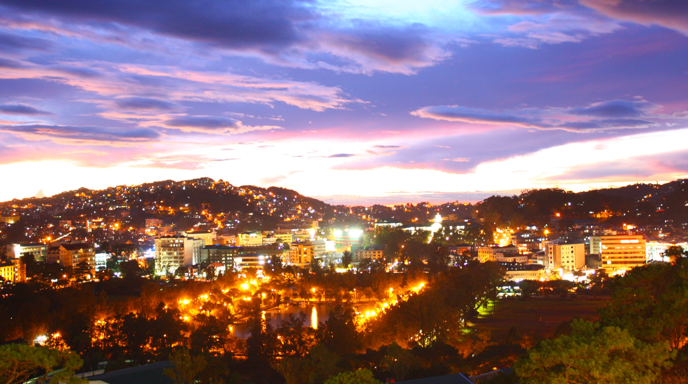
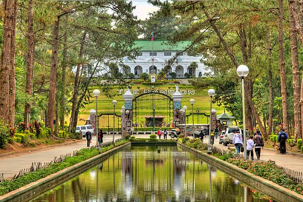

BAGUIO CITY ESCAPADE

Baguio City is a mountain resort city located in Northern Luzon, Philippines.
It is known as the "Summer Capital of the Philippines" or "City of Pines", owing to
its cool climate since the city is located approximately 4,810 feet above mean sea
level (1,466 m), often cited as 1,540 meters (5,050 feet) in the Luzon tropical pine
forests eco-region, which also makes it conductive for the growth of mossy plants,
and orchids. Baguio is a classified as a highly urbanized city. It is geographically
located within benguet, serving as the provincial capital from 1901 to 1916, but has
since been administered independently from the province follwoing its conversion into
a chartered city. The city is a highly urbanized area, a major center of business,
commerce, and education in northern Luzon, as well as the location of the Cordillera
Administrative Region. Baguio was established as a hill station by the United States
in 1900 at the site of an Ibaloi village known as Kafagway. It was the United States'
only hill station in Asia. The name of the city is derived from bag-iw, the Ibaloi
word for "moss".
BAGUIO CRAFT BREWERY
Is Baguio's first and only craft brewery with freshly - brewed beer from 18
rotating taps. The owner, local Christopher Ordas, began this passion for brewing
beer in his own garage in Canada. He later expanded his knowledge by studying the
German and West Coast styles of brewing in Munich, Prague, and San Diego. The beer
and food preparing menu brings another level of taste to beer lovers and converts
who enjoy both. The menu is a collaboration between Edmark Bustos of Amare and
the whole Baguio Brewery Team of Orando Tenorio Jr., Arnold Miguel, and Shellah
Yyzanne Merced.
- Location: 4 Ben Palispis Highway, KM 4, Baguio, 2600 Benguet
- Baguio's cool climate is surely inviting for guests to grab drinks at a nearby bar.
If you'd like to try different and unique flavors and a cozy ambiance, then head on over
to Baguio Craft Brewery - the city's first and only craft brewery. They serve freshly -
brewed craft beers from 18 rotating taps and they're known for their signature strawberry
craft beer known as the "Lagud" - named after an element.
MINES VIEW
Is one of the most well - known and most visited among the tourists attractions in
Baguio City. It is located at the northeast side of Baguio City. In the park is an
Observation Deck that will enable the tourists to take an astonishing panoramic view
that overlooks the mining town of Itogon which hosts the used to be a gold and cooper
mines of Benguet Corporation. A glimpse of the Amburayan Valley can also be witnessed
at the view deck. The park is also a splendid spot for picture taking with the alluring
view of the mountains as a background.
- Location: Outlook Dr., Benguet
- When visiting Baguio City, you'll be treated to breathtaking views and a cooler climate.
One of the most - visited tourist spots you should head to is Mines View Park. It's a park
overlooking the mining town of Itogon, as well as the abandoned gold and copper mines of the
Benguet Corporation. Here, you'll get unlimited panoramic views of the city and if you want
to be an early bird, never miss out this park that gives the best sunrise views. Nowadays,
you also have the chance to dress like the people of Cordillera - bahag (lioncloth), shield
and spear for men and tapis (decorated cloth for covering) for women.
THE MANSION

Was also used as the venue of important events, such as the second session of the
United Nations Economic Commission for Asia and the Far East (ECAFE) in 1947, the second
session of the Food and Agriculture Organization in 1948, and the first meeting of the
Southeast Asian Union (SEAU), more commonly known as the Baguio Conference of 1950, which
was conceived and convened by the President Elpidio Quirino. More recently, The Mansion
House has been the site of a number of International Conferences.
- Location: Lualhati Rd., Benguet
- The Mansion is the official summer residence of the President of the Philippines. You can
either have a photo outside its gate or go inside and look at its mini museum. All items are
collectibles from the past art collections and memorabilia of former Presidents.
BENCAB MUSEUM
Built on a promontory , the museum commands a breathtaking view of the adjacent garden,
farm, hill and mini - forest, the surrounding mountains, and the South China Sea in the
distant west. With its vision of bringing arts closer to the people, the museum houses the
artist's collections of his own works, as well as those of acknowledged Filipino masters
and rising contemporary artists. The granary Gods, lime containers, native implements,
weapons and other outstanding examples indigenous arts and crafts of the Cordilleras are
also highlighted - a reminder of the rich material culture and traditions of the Northern
Philippine highlands that has fascinated BenCab since 1960's, and part of the reason why
he has made Baguio home since the mid - 80's. The BenCab Museum is committed to the
promotion of the arts, and the preservation, conservation and protection of the environment,
as well as the culture and traditions of the Cordilleras, as an expression of the artist's
gratitude to the country that nurtured and inspired an artistic career that continues to
grow, mature and fascinate.
- Location: 6 Asin Road, Tuba, 2600 Benguet
- A trip to the City of Pines is incomplete without taking time to appreciate local art,
especially the works of Filipino National Artist Ben Cabrera. The master of Philippine
contemporary art has put up a four - level private museum called BenCab Museum which houses,
all his paintings, sculptures, and installation. The museum is also home to works of different
artists and indigenous artifacts. With more than eight permanent galleries with different themes,
guests are bound to enjoy themselves with a visual feast.
BURNHAM PARK
Officially known as the Burnham Park Reservation, is a historic urban park located in
downtown Baguio, Philippines. It wa designed by American architect and Baguio City planner,
Daniel Burnham who is also the namesake of the park. As a part of a larger plan for the City
of Baguio in 1905. The area where Burnham Park is situated
was formerly known as "Baguio Meadow". Burnham's role in establishing the park is acknowledged
through a bust bearing his likeness and a plaque located at the end of the park. The park's
design is influenced from the City Beautiful movement; it has a small pond or lagoon situated
at the green space center and has regimented rows of grass and sidewalk.
- Location: Baguio, Benguet
- When the city was still in its planning stage to be developed into a place of retreat for the
US military, one of its central features was the Burnham Park. Being one of the landmarks and well -
loved attractions, it;s no wonder every traveller has this place included in their itineraries. The
park features a man - made lake with rowboats for hire, a children's playground, skating rink, rose
garden, an orchidarium, and an Igorot garden among its 12 clusters. Visiting Burnham Park is still fun
to do. This area is thriving of locals, so if you don't want to fight with the crowd go here on
weekdays. This is also a good and fun way to exercise iy you've been going crazy on Baguio food trips.
STRAWBERRY FARM
The municipality of La Trinidad Valley has a total land area of almost 8,300 hectares consisting
mostly of mountains, rivers, and springs. Its floor elevation is 1,300 meters above sea level which
explains the cool temperature in the valley, perfect for growing strawberries all year long.
- Location: La Trinidad, Benguet
- Apart from being a family - friendly destination and known as the the country’s summer capital,
Baguio City is also the strawberry capital of the Philippines. Because of its cool climate,
strawberries are perfectly grown throughout the entire year. Within the city, you can enjoy a taste of
the famous strawberry taho, strawberry ice cream, and other strawberry delicacies. But if you’d like to
get a different experience, go strawberry picking at the Strawberry Farm located in La Trinidad, Benguet.
From November until May every year, you can pick as many strawberries as you can and you’ll just have to
pay for how much it weighs. The farm also sells other fruits and vegetables, and according to locals,
this farm has the best sunset view in La Trinidad. The best time to go strawberry picking in La Trinidad
is during the first quarter of the year, most especially during the summer month of March. Just like in
any other trip, it is best experienced with family or with a group of friends- important people in one’s
lives to share the happy memories with.
SM BAGUIO
Is an enclosed shopping mall in Baguio in the Philippines. At a floor area of 107,841 m2 (1,160,790 sq ft),
it is the largest shopping mall in the whole North Luzon Region. The entire complex stands on a land area of
80,000 m2 (860,000 sq ft) on Luneta Hill on top of Session Road overlooking historic Burnham Park and
opposite Baguio's City Hall which is situated on a northern hill. The mall was formally opened on November 21,
2003. It is also the first SM Supermall which does not use an air-conditioning system upon its completion. The
mall is the only SM Mall, other than the SM Mall of Asia, that make use of natural lighting and which does not
have an air conditioned common area.
- Location: Luneta Hill, Upper Session Road, Baguio
- The lot at Luneta Hill where SM City Baguio stands was formerly occupied by Resort Hotel Corporation's Pines Hotel.
In 1988, SM won an auction by the Development Bank of the Philippines (DBP) over the lot reportedly for only ₱2,000 per
square meter. DBP earlier foreclosed the property in 1984 after the hotel building was burned down few years earlier.
Resort Hotel defaulted in a ₱114 million loan with businessman Rodolfo Cuenca mortgaging using the Pines Hotel property,
the Taal Vista and the Mindanao Hotel in Cagayan de Oro. Cuenca of Resort Hotel and John Gokongwei of Robinsons Investment
Corporation sued the DBP in 1990 in a bid to block the sale of the lot to SM. In 1992, Councilor Frederico Mandapat
filed a resolution, objecting the sale of the lot, noting the objection of the two companies. The Department of
Environment and Natural Resources processed the sale. Mandapat asserted the city's claim over 2,000 square metres
(22,000 sq ft) portion of the lot where a city library was originally put up by the city government.
CAMP JOHN HAY
Is a mixed-used development which serves as a tourist destination and forest watershed reservation in Baguio,
Philippines which was formerly a military base of the United States Armed Forces. The United States 48th Infantry Unit
under Captain Robert Rudd established Hill Station in the current site of Camp John Hay in 1900 during the Philippine -
American war. The site is referred to the locals, the Ibalois as "Kafagway" and is owned by Ibaloi leader, Mateo
Cariño. 213 hectares (530 acres) of the land was then designated as "Camp John Hay", a military reservation for
American soldiers, in October 1903 when US President Theodore Roosevelt signed a presidential order. American military
personnel were given a place to refuge from the relative hotter temperature of the lowlands.
- Location: Baguio City
- A paradise nestled in the City of Pines, Camp John Hay gives you a taste of pleasure and adventure. Outlined with numerous
leisure spots, activity centers, shopping outlets and food joints, every corner is absolutely fun-filled. Visiting Camp John Hay
will provide a glimpse of the former rest and recreation facility of past American soldiers. While it has undergone several
changes since its establishment in the 1900s, Camp John Hay still fosters a relaxing and peaceful ambiance. Here, you’ll find
historic buildings and structures such as The Bell House, which is a museum with a secret garden, an amphitheater and a library.
There are also lush greens and gardens such as the Cemetery of Negativism. For those who’d like to feel the adrenaline rush
of zip lines and cable cars, there’s the Tree Top Adventure.
TAOIST BELL CHURCH
Is an attractive and serene refuge reflecting the cultural and spiritual lives of the Filipino-Chinese community living
in the “City of Pines". From afar, you’ll already grasp that it’s a space for meditation. Upon entering the temple, visitors
are welcomed by two dragon structures facing each other at the entrance. There are lotus and fish ponds where you can throw
in coins and make a wish. The entire complex reminds me of the Taoist Temple in Cebu City, but I prefer it more because
it’s much closer to nature.
- Location: Baguio City
- Typical to any Chinese temple, you’ll enjoy a visual feast of colourful pagodas, flags, bells, and sculptures that are
Oriental in design. I am particularly impressed by the lavishness of the main altar and the artistry behind the statues
of the Taoist Gods. Walking uphill can give you a good panoramic view of the mountains covered with urban structures and
houses. There are also zen-inspired landscapes, complete with lush gardens, flowers and benches, where you can spend some
quiet time with your friends and family while escaping the hustle and bustle of the busy streets in downtown Baguio. Indeed,
the Taoist Bell Church is a quiet little place conducive to both relaxation and meditation. So if you happen to visit Baguio,
make sure you don’t miss your opportunity to visit this temple. There are no entrance fees for visitors.
BOTANICAL GARDEN
The Baguio Botanical Garden is one Baguio City’s attractions. It is a great place to unwind because it is surrounded
by lush vegetation and water elements. This park used to be called Botanical and Zoological Garden. It has been named as
Igorot Village, due to the native huts and Igorot sculptures. It was also named Imelda Park during the Marcos regimen.
During Baguio’s Centennial celebration, the name has been changed to Centennial Park. Along with the name-change, the park
has also undergone rehabilitation which included features that highlight the 100 - year history of the summer capital.
- Location: Leonard Wood Road, Baguio City
- Near the park’s main entrance are giant stairs facing a giant sculpture made by Ben Hur Villanueva. The bronze sculpture
represents the team effort of the Cordillerans, Americans, Chinese, and Japanese in building Baguio City. You can walk through
the different sections of the stone paths and cemented stairs. There are portions with kiosks, benches, and sheds, where you can
rest, eat or just do nothing. One of the nipa huts inside the garden - The park is brimming with trees and plants of all kinds
There are also artistic structures, giant sculptures, and water elements. Japanese Tunnel - Buddha statues lined up on the way
to the Japanese tunnel. This man-made tunnel is like a dark maze so it’s a great experience for adventure seekers. There are
installed lights on the floor, just enough to see your path. The tunnel was among the number of tunnels constructed by the
Japanese army during WW2. It was used as a bunker and a passageway to transport war supplies. The tunnels were discovered
in the late 1970s including the one located in Botanical Garden. This 150-meter passageway was opened to the public as a
tourist spot in 2014. The Japanese tunnel is integrated with the friendship tribute with Japan. A bridge on the Chinese Pavilion -
The park features the history of the city including the different foreign occupations. There are pavilions which commemorate the
friendship between Baguio and foreign cities in South Korea, Japan, China, Canada, and U.S. The Thailand Garden is currently
under construction. The friendship sections are adorned with symbols representing the sister city. A replica of the golden gate
bridge represents U.S., mini Buddha statues are lined up at the Japanese area, a Chinese gazeebo for China, and Korean characters
for Korea.
LION'S HEAD
Is a statue along Kennon Road, a major highway in Luzon, Philippines that leads to the city of Baguio. The Lion's
Head measures 40 ft (12 m) in height. It was conceptualized by the Lions Club members of Baguio, during the term of
of Luis Lardizabal as mayor of Baguio from 1969 to 1970 and as the club's president, to become the club's symbol
or imprint in the area. Prior to the artistic sculpting, the limestone was prepared by a group of engineers and miners
then the "actual artistic carving of the façade" was rendered by Anselmo Bayang Day-ag, an Ifugao and Isinay artist and
woodcarver from the Cordillera Administrative Region. The construction project began in 1968 but was interrupted. The
project was continued in 1971 by another Lions Club president, Robert Webber, and was unveiled in 1972.
- Location: Kennon Road Camp 6, Baguio City
- Before you finally reach the heart of the City of Pines, you’ll be welcomed by this gigantic statue that resembles a lion’s
head located in Kennon Road – a major highway that will lead you to Baguio City’s downtown area. The now gold - painted statue,
measuring about 40 feet, has been a popular stopover among travelers who’d like some instant photo souvenirs. Constructed in
the 1970s through the initiative of the Lions Club, the Lion’s Head has been restored after severe cracks and vandals have
plagued its beauty. Chinese buildings with lion statues being considered as “guardians,” the Lion’s Head is said to play such
a role – to guard the needs of its community. The forerunner of the man-made Lion's Head was a "large rock" described to be
"naturally shaped like a lion", which prior to 1972 was the landmark that tourists observe along Kennon Road towards Baguio
City. the current Lion's Head landmark was also a limestone naturally shaped like a "male lion, with a mane".
MOUNT PULAG
Is Luzon’s highest peak at 2,926 metres (9,600 ft) above sea level. The borders between the provinces of Benguet,
Ifugao, and Nueva Vizcaya meet at the mountain's peak. It is the third highest mountain in the Philippines, next to
Mount Apo and Mount Dulang-dulang. Mount Pulag is famous for its "sea of clouds" and the view of the Milky Way Galaxy
which has attracted many tourists who wish to see the "other - worldly" scenery. The Ibaloi people of Benguet mummify
their dead. The Kabayan mummy burial caves, one of the main attraction of the site are considered Philippine national
cultural treasures under Presidential Decree No. 432. Mt. Pulag was proclaimed a National Park through Pres. Proclamation
No. 75 on February 20, 1987 covering an area of 11,550 hectares (28,500 acres). It is part of the Cordillera
Biogeographic Zone and is a National Integrated Protected Areas Programme (NIPAP) site. The National Park is inhabited by
different ethnic groups such as the Ibalois, Kalanguya, Kankana-eys, Karao, Ifugaos and the Ilocanos.
- Location: Luzon
- Because of its high elevation, the climate on Mount Pulag is temperate with rains predominating the whole year. Rainfall
on the mountain averages 4,489 millimetres (176.7 in) yearly with August being the wettest month with an average rainfall of
1,135 millimetres (44.7 in). Snow has not fallen on its top in at least the past 100 years; however, there have been mild flurries
on the mountain, especially during December, January and February. Frost is more common on the mountain due to the low temperature
during those months. During the amihan season, the temperature at the highest point of the mountain is known to dip into sub -
freezing temperatures, making it the coldest place in the country. The only recorded incidence of snow was in the late 1800s.
Mount Pulag hosts 528 documented plant species. It is the natural habitat of the endemic Dwarf Bamboo, (Yushania niitakayamensis)
and the Benguet pine (Pinus insularis) which dominates the areas of Luzon tropical pine forests found on the mountainsides. Among its
native wildlife are 33 bird species and several threatened mammals such as the Philippine Deer, Giant Bushy-Tailed Cloud Rat (bowet)
and the Long-Haired Fruit Bat.[7] Mount Pulag is the only place that hosts the four cloud rat species. It is one of the most biodiverse
locations in the Philippines, with the newly found (since 1896) 185 - grams Dwarf cloud rat, Carpomys melanurus, a rare breed
(endemic to the Cordillera) and the Koch pitta bird among its endangered denizens.